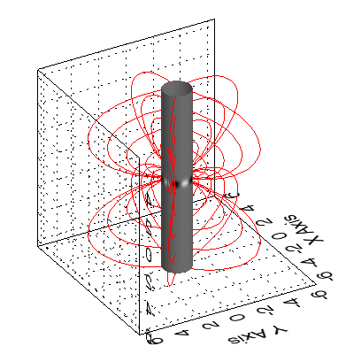
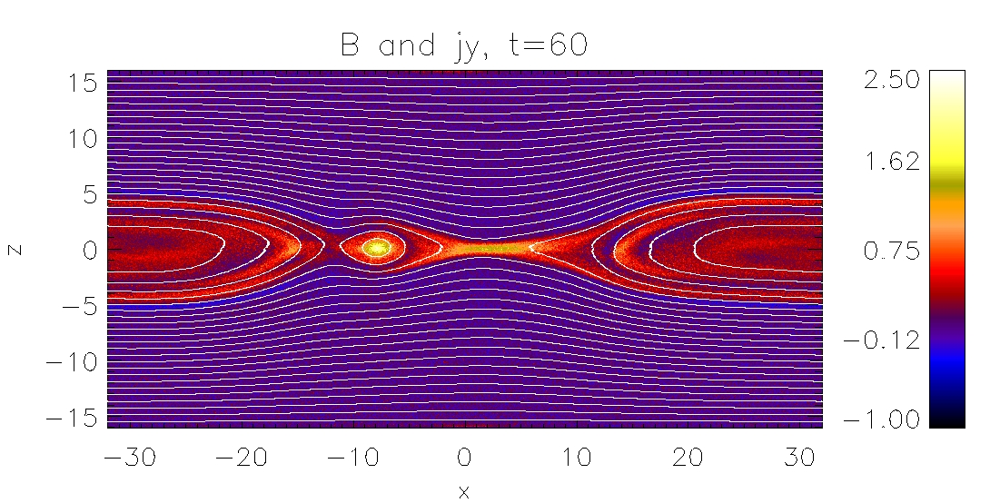
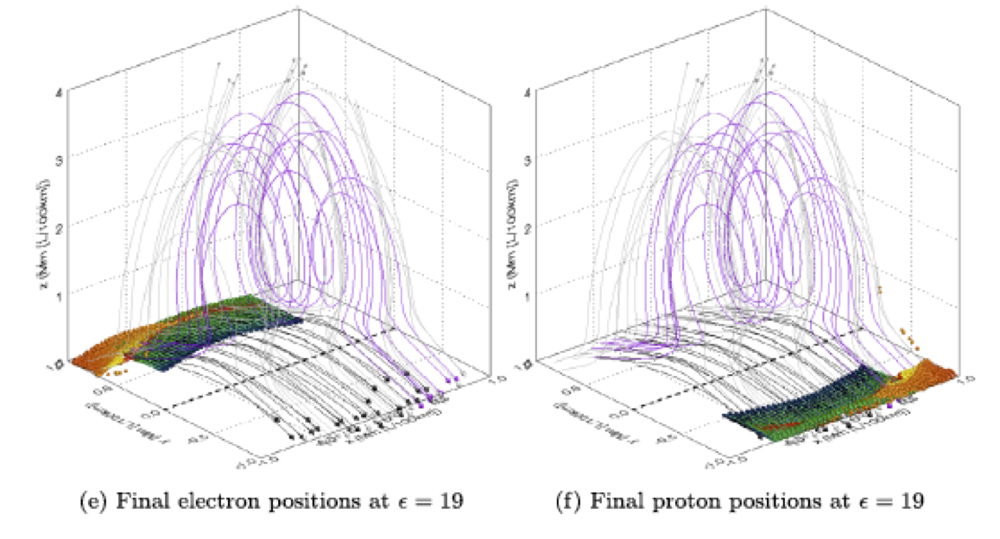

 Static solutions of the magnetohydrodynamic (MHD) equations are often used to model magnetic fields of astrophysical systems in a relatively simple way, for example to interpret observational data or as a starting point for theoretical investigations.
A PhD project on magnetohydrostatic (MHS) equilibria could involve 2D and/or 3D MHS equilibria and emphasize either analytical or numerical methods (or a combination of both). Some examples would be
The figure shows magnetic field lines of an analytical 3D MHS solution for a rigidly rotating system calculated in cylindrical coordinates (for details see publication No 85 in the publication list).
 Current sheets are localised magnetic structures in plasmas with an increased electric current density. Current sheets are often crucial for the release of stored magnetic energy and thus they are at the heart of a large number of interesting dynamical phenomena, e.g. solar activity and magnetospheric substorms. In many space plasma systems particle-particle collisions are negligible and therefore the current sheets in such systems are called collisionless.
Collisionless current sheet equilibria are useful for modelling purposes and as initial conditions for theoretical investigations of dynamic physical processes like magnetic reconnection. Collisionless plasmas can be described theoretically using Vlasov-Maxwell theory.
Building on previous work by me and my co-workers (see e.g. publication No 84 in the publication list for a recent overview) in this project novel aspects of the equilibrium and dynamics of collisionless current sheets will be investigated, using a combination of analytical and numerical methods.
The figure shows a snapshot of the magnetic field in the x-z-plane and the y-component of the current density (colour contours) of (for details see publication No 85 the a particle-in-cell (PIC) simulation of collisionless magnetic reconnection in a force-free current sheet (for details see publication No 72 in the publication list).
 A major open question in the physics of solar flares lies in describing the mechanisms responsible for generating significant populations of non-thermal particles. A variety of mechanisms have been proposed, including acceleration by parallel electric field in the reconnection region, acceleration in the reconnection outflow region (e.g. collapsing magnetic traps), acceleration at shocks, and stochastic acceleration.
A PhD project on this topic would involve extending previous work (see for example publications No 70, 71, 74, 77, 80 and 83 in the publication list) to improve the electro-magnetic field and plasma models used in the past and test how efficient the new models are in accelerating particles by using test particle calculations. These calculations will initally be utilising existing numerical codes, adding further features to the codes as required.
The figure shows magnetic field lines and the final positions of high energy electrons and protons in a simple analytical model of a magnetic field undergoing non-null 3D magnetic reconnection (for details see publication No 77 in the publication list).
Last updated: 27 January 2022